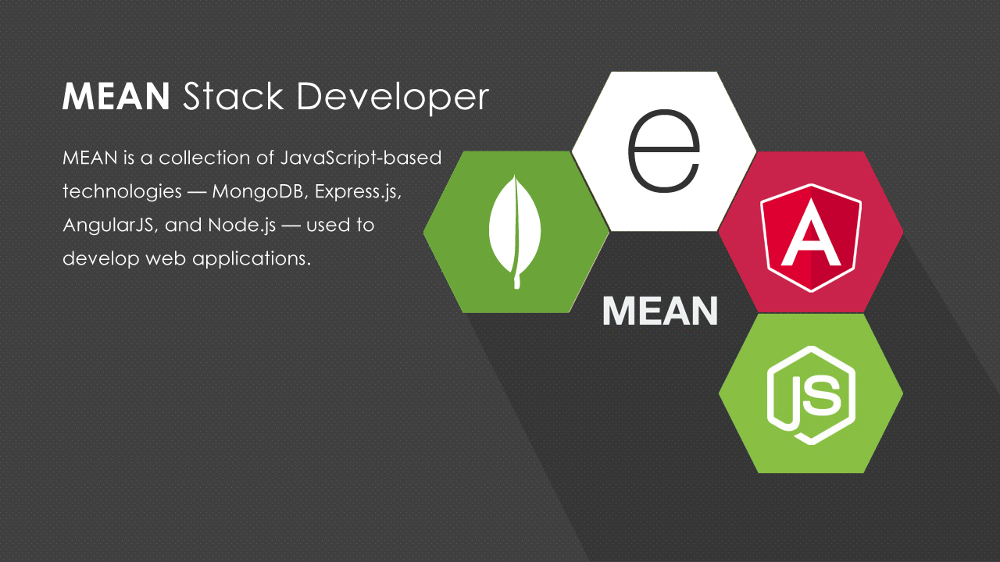
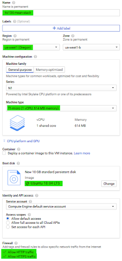
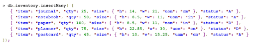
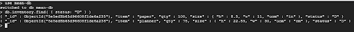
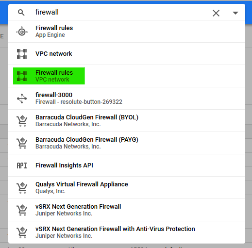
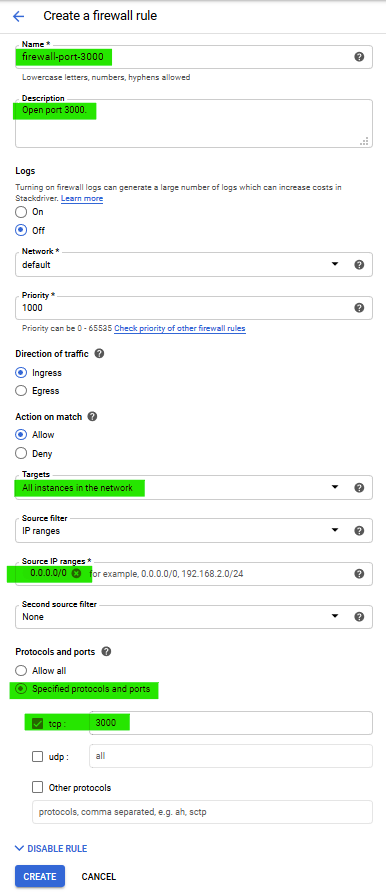
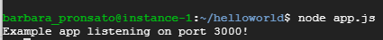

How to create a web app with MEAN stack.
Step 1
Set up Ubuntu on Google Cloud
- * Visit the Google Cloud console page. *
- Create an account
- On the bottom right look for the link called Console.
- On the top nav bar, select Project.
- In the nav bar on the left find Compute Engine.
- Once you there select VM Instance.
- Then Create.
- Name the Instance
- Plugin your “Region” and “Zone” (Oregon)
- Change the “Machine type” to the smallest one “f1-micro”
- For “Bootdisk” Use “Ubuntu 18.04 LTS”
- Down at “Firewall” select “Allow HTTP Traffic” and “Allow HTTPS Traffic”
- Then hit “Create” and Wait
- Once its done loading check to see if ur instance is running by looking at the green dot with a white checkmark.
- Click “SSH” to the right of the instance that you want to use, keep in mind it will take some time to load.
- Continue to Node.js.

Step 2
Software
- Once the Command Prompt opens you’ll need to install Node.js, in the command line Paste these commands:
-sudo apt-get update
- sudo apt-get install -y curl apt-transport-https ca-certificates && curl --fail -ssL -o
- setup-nodejs https://deb.nodesource.com/setup_10.x &&
- sudo bash setup-nodejs
&&
- sudo apt-get install -y nodejs build-essential
- To install Angular.js paste this into the command line.
- sudo -i npm install -g @angular/cli
- Type “y” or “n” and hit enter when asked to share data with Google (makes no difference for this tutorial)
- To install Express.js create a directory called “mean-stack”:
- mkdir mean-stack
- Then change the directory to helloworld.
- cd mean-stack
- After that, initialize your node files and your package.json.
- npm init
- On first prompt (package name): press Enter, on second prompt (version): press Enter, on third prompt (description): press, Enter.
- When asked for the “entry point” enter: app.js
- When asked for test command: press enter.
- When asked for git repository: press enter.
- Keywords: press enter
- Author: press enter
- License (ISC): press enter
- Is this OK? (yes): press enter

- Run express.js in your project and directory
- npm install express --save
- Finally, open the nano text editor:
- nano app.js
- Once you’re in nano copy and paste this below
var express = require (’express’);
var app = express();
app.get(’/’, function(req, res) {
res.send(’Hello world!’);
});
app.listen(3000, function () {
console.log(’Example app listening on port 3000!’);
});
- To exit the nano CTRL+X, then press y and enter
- Install MongoDB packages
- sudo apt install -y mongodb
- Run MongoDB
- sudo systemctl start mongodb
- To begin using mongo shell
- mongo
- To create and switch to a new collection named "mean-stack-db":
- Install MongoDB packages
- db.inventory.insertMany();
- Inside the function you must enter data in the JSON format, for instance:

- Finally you can search stuff inside your database by creating queries. For instance:
- db.inventory.find( { status: "D"}

Step 3
Firewall Rule
- From command line:
- sudo iptables -I INPUT -p tcp --dport 3000 -j ACCEPT
- or
- Back in Google Cloud Platform, in the search bar search for: Firewall
- From the results select: Firewall rules
- Click on "CREATE FIREWALL RULE"

- Name: firewall-port-3000
- Description: Open port 3000
- Targets: All instance in the network
- Source IP ranges: 0.0.0.0/0
- Protocols and ports: Click on checkbox: "tcp" and in entry box type: "3000"
- Click CREATE button

Step 4
Running the server
- Back in the GNU Bash Shell run the server with the following command: (if still in the mongo db type exit
- node app.js
- If you see this you’re good

- Back in the Google Cloud Platform go to:
- Compute Engine
- Click on VM instances:
- Type the External IP address into the URL bar, removing the "s" from "https" and adding ":3000" to the end
- Example: http://34.82.213.84:3000